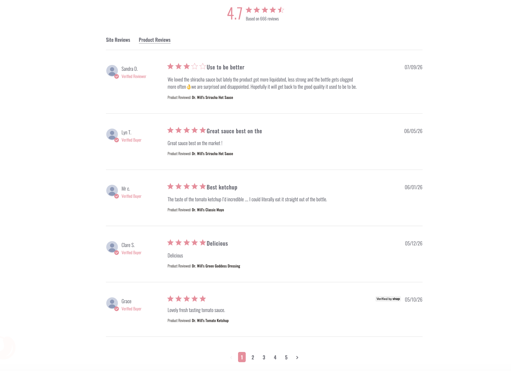
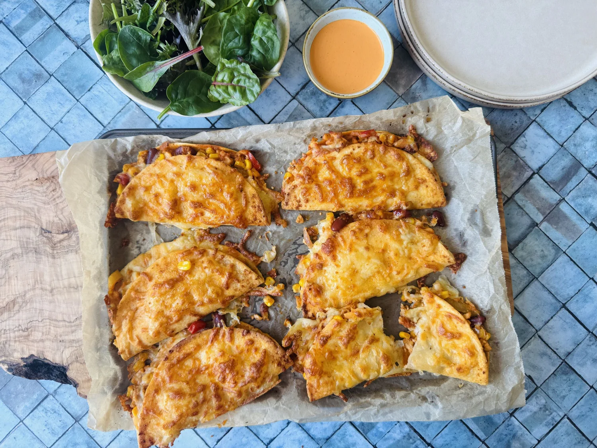
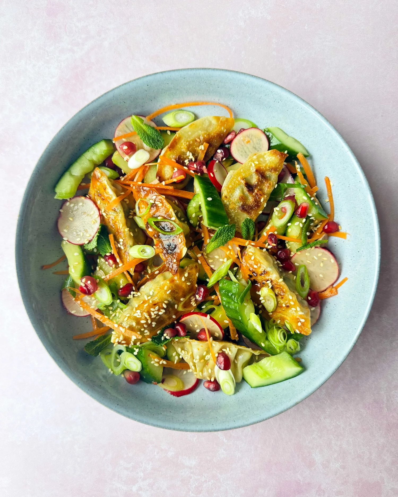
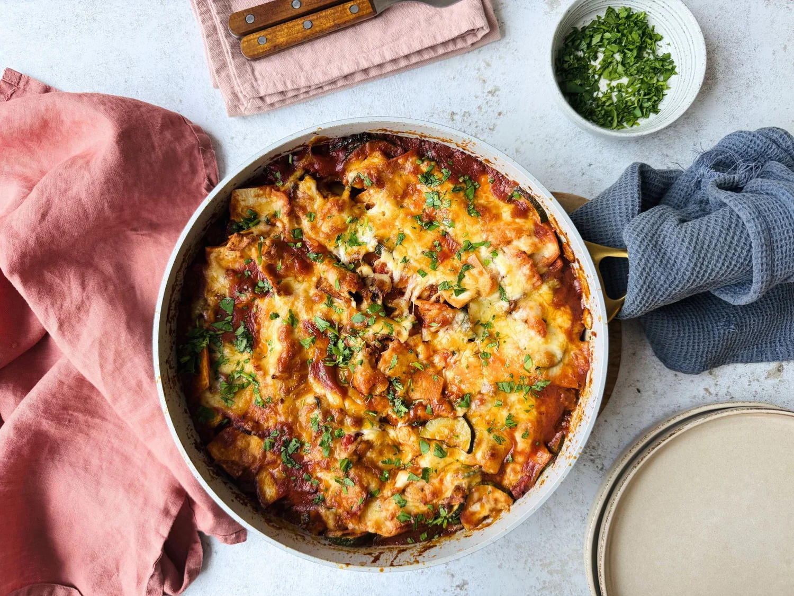
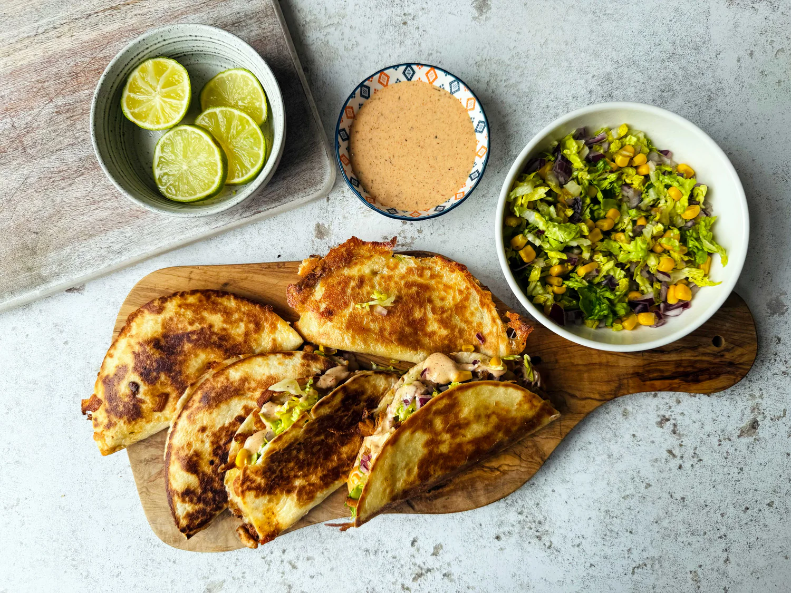
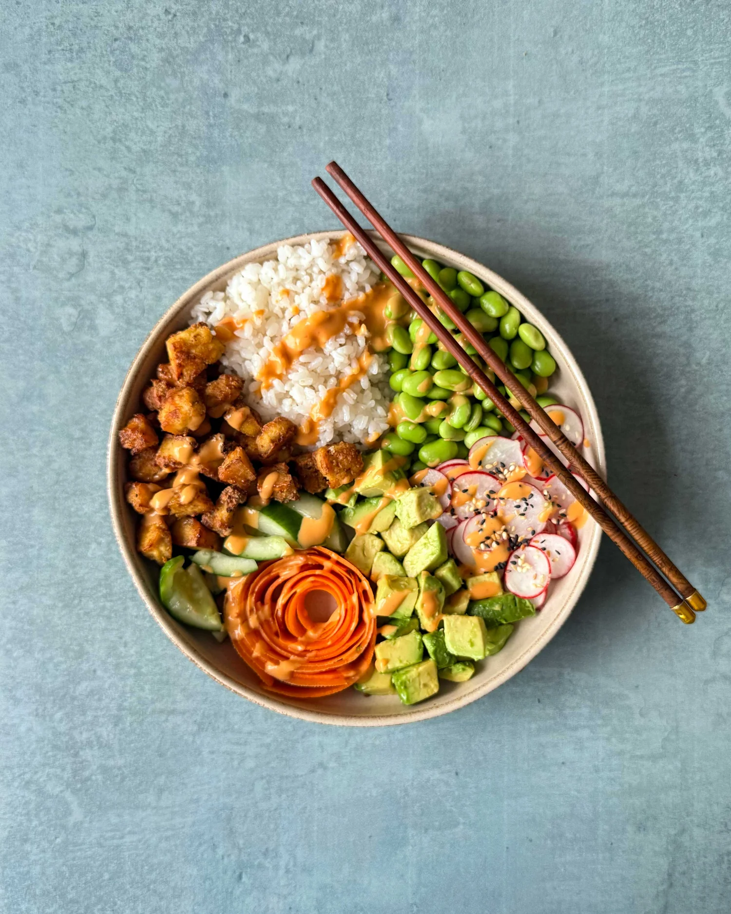
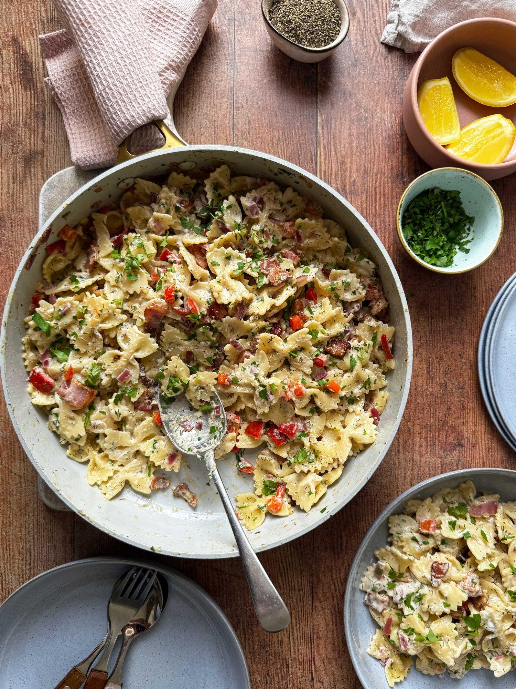
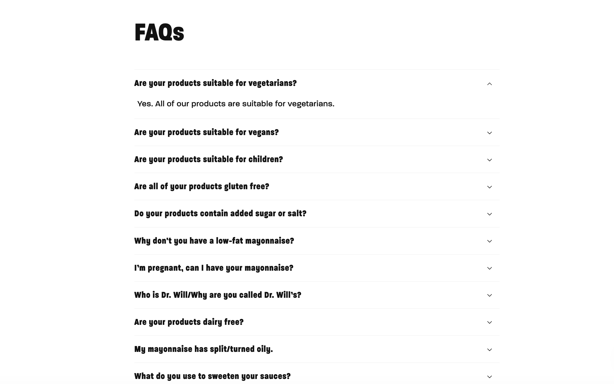

Proper sauce, made with real ingredients. Because the bottle you reach for every week deserves a second look too. Discover the range and build a box around your favourites.
The food gets checked. The sauce deserves a look too.
Many familiar sauces rely on refined sugar and ingredients that are easy to overlook — the bottle deserves that same attention.
Real ingredients. Proper flavour. Nothing to hide.
Real ingredients ✌️ Proper flavour ✌️ Made in the UK ✌️ Familiar food, made differently ✌️ Turn the bottle around ✌️Real ingredients ✌️ Proper flavour ✌️ Made in the UK ✌️ Familiar food, made differently ✌️ Turn the bottle around ✌️
The thing most people forget
You think about what goes into the meal. What about the sauce?
You check the ingredients, plan the portions, and think about what goes onto the plate. Then the sauce often comes down to habit: the same bottle, added without a second thought.
01
The meal
You think about what everyone is eating. Ingredients get checked, portions get planned, and the plate comes together with a little more thought.
02
The sauce
Then comes the familiar bottle from the cupboard. It tastes familiar, so it rarely gets questioned, even when the ingredient list is longer or harder to understand than expected.
03
The second look
Turn the bottle around. Where does the sweetness come from? How much of the label do you recognise? And does the sauce still feel like such a small part of the meal?
The sauce deserves a second look too.
What changes when you look
Sauce is sauce. Until you read the label.
Most sauces look familiar from the front. It is only when you turn the bottle around that the real differences begin to appear: what is inside, where the sweetness comes from, and what gives the sauce its flavour.
The usual sauce
Dr. Will's
What's inside?
The usual sauceA longer ingredient list, with more names you may not immediately recognise.
Dr. Will'sRecognisable ingredients chosen for a clear purpose in the recipe.
Where does the sweetness come from?
The usual sauceRefined sugar may be added to create the sweetness people expect.
Dr. Will'sDates or date syrup bring sweetness where the recipe needs it.
Does better mean bland?
The usual sauceFamiliar flavour, often built through a more complicated ingredient list.
Dr. Will'sRich, familiar flavour without making the recipe harder to understand.
How big is the switch?
The usual sauceChanging how the family eats can feel like a much bigger ask.
Dr. Will'sKeep the meals everyone already loves. Start by changing the bottle.
COMPARISON WORDING IS A STRATEGIC PROTOTYPE. FINAL RANGE-WIDE AND CATEGORY COMPARATIVE CLAIMS TO BE CONFIRMED BEFORE PRODUCTION. No competitor is named and no figures are used; the usual-sauce column stays neutral (no crosses / no fear language) so the difference reads through clarity, not blame.
Our story
How a simple question became a better bottle.
Three different worlds. One shared belief.
Will was a doctor thinking about what families were eating. Josh was a restaurateur who knew that better food still had to taste brilliant. Liam brought the commercial experience to help turn an idea into something real, shaped in part by growing up around food through his food-writer mother. Different starting points, but the same belief: everyday sauce could be made better.
The problem was already on the table.
The question became personal when Will noticed how much sugar could be hiding in the ketchup served with children's meals. Josh was seeing the same disconnect from a restaurant kitchen: carefully considered food was often finished with a sauce that had received far less thought. The meal was being questioned. The bottle rarely was.
Could ketchup be made better?
The idea sounded simple: make a ketchup from recognisable ingredients, avoid relying on added refined sugar, and make sure it still delivered the rich, familiar flavour people expected. Better ingredients would only matter if the ketchup still tasted genuinely good.
Thirty-odd recipes later.
Batch after batch was tested in Will's family kitchen until the sweetness, acidity, and tomato flavour finally came together. The first 300 bottles were then taken to Jesmond Food Market and sold out, proving that people were ready for a sauce made with more thought, as long as it still tasted brilliant.
One bottle became a whole range.
What began with a better ketchup grew into table sauces, mayos, dressings, and hot sauces made for real meals and real life. Different products, but the same standard: recognisable ingredients, proper flavour, and everyday sauces worth turning around.
The original idea still guides every bottle.
Dr. Will's has grown far beyond its first ketchup, but the original vision has stayed the same: make everyday sauces with more thought, use ingredients people can understand, and never lose sight of the flavour that makes people reach for the bottle in the first place.
Reasons to believe
What makes Dr. Will's different?
Four clear reasons to trust what goes into every bottle and the standards behind it.
Real ingredients. Proper flavour.
Food that tastes like food.
Recognisable ingredients, rich flavour, and no overly sweet or artificial-tasting finish. A more considered sauce that still feels satisfying.
Made in small batches.
More care in every batch.
Made in smaller batches with closer attention to balance, texture, and consistency. More care goes into getting every bottle right.
Great Taste award-winning across the range
Great Taste award-winning.
Proof that better doesn't mean bland.
Great Taste recognition across the range shows that better ingredients can still deliver proper flavour. These are sauces made to taste genuinely good.
Certified B Corporation.
A more responsible way to make sauce.
Certified B Corporation status reflects a more thoughtful way of doing business. It is about greater responsibility, openness, and care beyond the bottle.
Card 3 is framed as brand history/credibility (a founding question), not a medical claim — deliberately avoids "invented by a doctor / doctor approved / doctor recommended" language. B Corp appears only here (card 4); Great Taste appears only as a taste-proof line (card 2). Confirm award and certification wording before production.
Meet the range
One simple ketchup idea. A whole cupboard of real sauce.
What started with one bottle has grown into a cupboard full of favourites. Pick a sauce and see what makes it different.
Good to KnowIngredientsNutritional Info
Ingredients, nutrition, ratings and Good to Know badges are sourced from supplied live dr-wills.com product data (per 100g + per-serving). Chipotle Ranch is missing rating, review count, pack size and nutrition and shows "to be confirmed" states rather than invented values — see per-product code comments in the script below for individual source-data inconsistencies (e.g. Barbecue Sauce's unconfirmed sugars footnote, Sriracha's unusual ">0.1g" serving values, Sriracha Mayo's serving-size mismatch). Each product currently has one supplied packshot image; gallery arrows/dots are hidden automatically when only one image is available, but the gallery markup supports more images per product later. Verify all values against approved product data before production.
The main event
Build your box.
Mix and match the sauces you actually use. Start with four, stock up with eight, or get the best value when you build a box of twelve.
Real reviews on proper flavour, recognisable ingredients and the sauces people use every day.

See how people use the sauces
What are we putting it on?
Burgers, bowls, chips, tacos and everything in between.

DinnerBuffalo Hot
Buffalo Chicken Tacos
A generous drizzle of buffalo turns taco night up a notch.

LunchSriracha
Crispy Dumpling Salad
A little sriracha heat against something fresh and crunchy.

DinnerChipotle Ranch
Chipotle Beef Enchiladas
Smoky, saucy and finished with a cooling chipotle ranch.

DinnerBuffalo Hot
Peri Peri Tacos
Bright, spicy and built for sharing on a weeknight.

LunchSriracha Mayo
Sriracha Mayo Poke Bowl
A creamy, spicy swirl over rice, veg and something fresh.

DinnerChipotle Ranch
Creamy Ranch Pasta
Comfort food with a real-ingredient dressing stirred through.
Image-led inspiration only — not a recipe library. Six real supplied images. Sauce pairings are framed as suggestions; confirm before pairing a specific product with a specific dish in production. No ingredient lists or method invented.
As seen in
Real sauce. Recognised.
Press logos are the official supplied assets, shown greyscale for a balanced editorial strip (colour on hover). Customer proof now lives in the Customer Reviews section above — no duplicate quotes here.
Questions, answered
Still deciding? Start here.

Real food deserves real sauce.
You've given the meal some thought. Now give the sauce a better bottle. Mix your favourites and build a box worth reaching for.